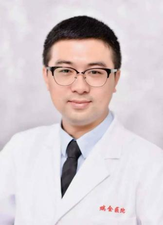

EP02 · 上海 → 日喀则42:39
带去的，不只是技术
三年援藏，能为一座医院留下什么？
走上高原的手术台，也走进当地人的生活。乐飞老师回望三年援藏，谈技术如何落地、人才如何成长，以及医学生的基本功。
- 高原上的手术台
- 人才培养与接力
- 医学生的基本功
去微信听完整故事 公众号原文 · 图文与音频
电波特别企划 · 从黄浦江到日喀则：电波特别企划 EP2——带去的，不只是技术
 山海有回声
山海有回声
EP02 · 上海 → 日喀则42:39
三年援藏，能为一座医院留下什么？
走上高原的手术台，也走进当地人的生活。乐飞老师回望三年援藏，谈技术如何落地、人才如何成长，以及医学生的基本功。
电波特别企划 · 从黄浦江到日喀则：电波特别企划 EP2——带去的，不只是技术
让回声传得更远
在公众号原文里留下你的喜欢，也欢迎把这一期分享给身边的同学。